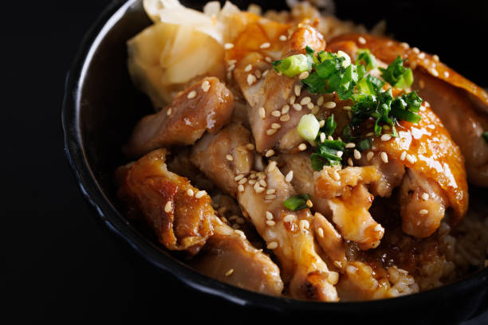

This dish might seem basic but it has stood the test of time through many cultures. It is a simple dish that features sushi rice topped with diced chicken as it core covered in sweet teriyaki sauce. To make this dish better you can add green onions with sesame seeds for some texture. This dish is relatively straight forward but will not disappoint is on the final product.